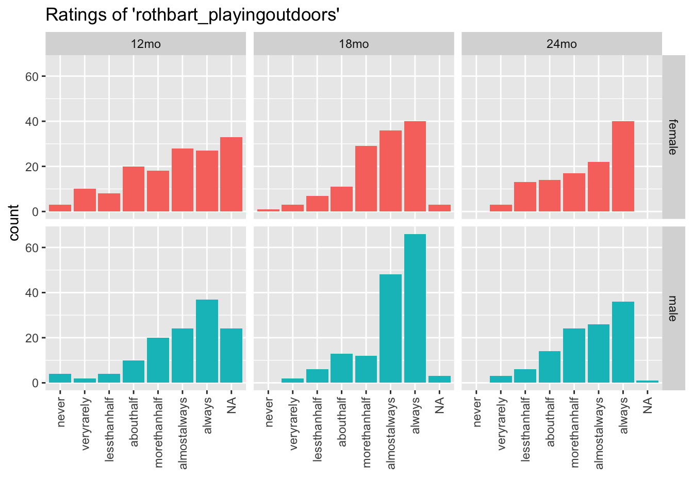
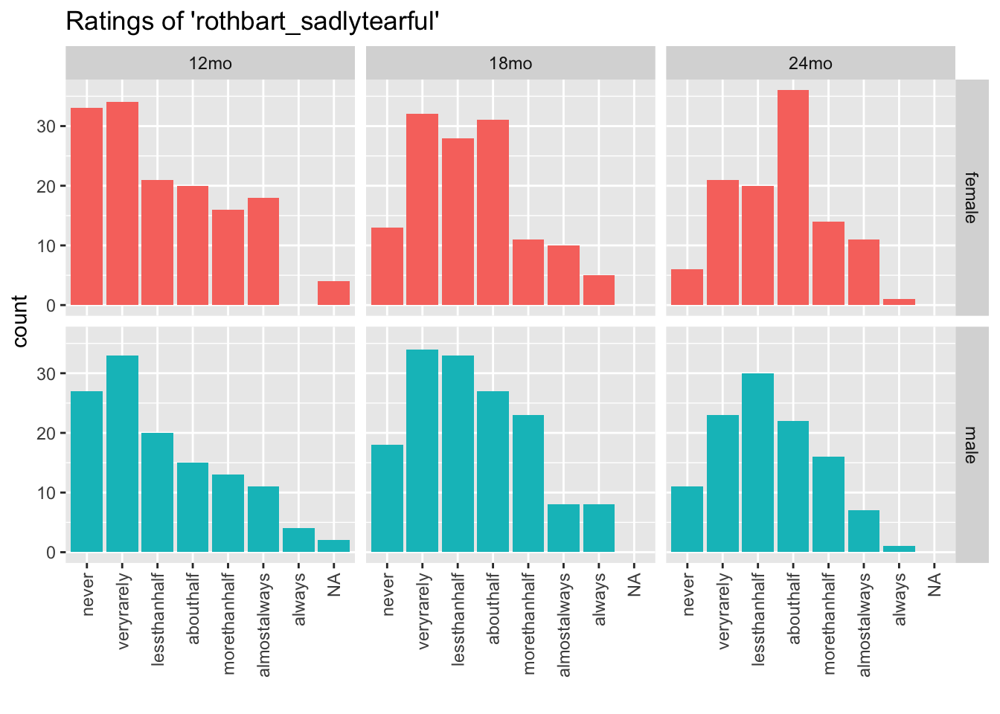

these_vars <-names(df)res <-invisible(lapply(ecbq_vars, return_section, data = ecbq_complete))cat(unlist(res), sep ="\n")
Responses for: rothbart_unfamiliarperson
Q: ‘When approached by an unfamiliar person in a public space (for example, the grocery store), how often did your child cling to a parent?’
Figure 1: Distribution of responses to rothbart_unfamiliarperson
Responses for: rothbart_troubletask
Q: ‘While having trouble completing a task (e.g. building, drawing, dressing), how often did your child get easily irritated?’
Figure 2: Distribution of responses to rothbart_troubletask
Responses for: rothbart_companyofchild
Q: ‘When a familiar child came to your home, how often did your child seek out the company of the child?’
Figure 3: Distribution of responses to rothbart_companyofchild
Responses for: rothbart_choiceactivities
Q: ‘When offered a choice of activities, how often did your child decide what to do very quickly and go for it?’
Figure 4: Distribution of responses to rothbart_choiceactivities
Responses for: rothbart_quietlysung
Q: ‘During daily or evening quiet time with you and your child, how often did your child enjoy just being quietly sung to?’
Figure 5: Distribution of responses to rothbart_quietlysung
Responses for: rothbart_playingoutdoors
Q: ‘While playing outdoors, how often did your child choose to take chances for the fun and excitement of it?’

Figure 6: Distribution of responses to rothbart_playingoutdoors
Responses for: rothbart_morethan10
Q: ‘While engaged in play with his/her favorite toy, how often did your child play for more than 10 minutes?’
Figure 7: Distribution of responses to rothbart_morethan10
Responses for: rothbart_respondingremarks
Q: ‘While engaged in play with his/her favorite toy, how often did your child continue to play while at the same time responding to your remarks or questions?’
Figure 8: Distribution of responses to rothbart_respondingremarks
Responses for: rothbart_excitedlovedadults
Q: ‘When told that loved adults would visit, how often did your child get very excited?’
Figure 9: Distribution of responses to rothbart_excitedlovedadults
Responses for: rothbart_fiddlehair
Q: ‘During quiet activities, such as reading a story, how often did your child fiddle with his/her hair, clothing, etc.?’
Figure 10: Distribution of responses to rothbart_fiddlehair
Responses for: rothbart_roughrowdy
Q: ‘While playing indoors, how often did your child like rough and rowdy games?’
Figure 11: Distribution of responses to rothbart_roughrowdy
Responses for: rothbart_rockedhugged
Q: ‘When being gently rocked or hugged, how often did your child seem eager to get away?’
Figure 12: Distribution of responses to rothbart_rockedhugged
Responses for: rothbart_involvednewactivity
Q: ‘When encountering a new activity, how often did your child get involved immediately?’
Figure 13: Distribution of responses to rothbart_involvednewactivity
Responses for: rothbart_tirequickly
Q: ‘When engaged in an activity requiring attention, such as building with blocks, how often did your child tire of the activity relatively quickly?’
Figure 14: Distribution of responses to rothbart_tirequickly
Responses for: rothbart_callattention
Q: ‘During everyday activities, how often did your child pay attention to you right away when you called to him/her?’
Figure 15: Distribution of responses to rothbart_callattention
Responses for: rothbart_tags
Q: ‘During everyday activities, how often did your child seem to be irritated by tags in his/her clothes?’
Figure 16: Distribution of responses to rothbart_tags
Responses for: rothbart_noisyenvironment
Q: ‘During everyday activities, how often did your child become bothered by sound while in a noisy environment?’
Figure 17: Distribution of responses to rothbart_noisyenvironment
Responses for: rothbart_energy
Q: ‘During everyday activities, how often did your child seem full of energy, even in the evening?’
Figure 18: Distribution of responses to rothbart_energy
Responses for: rothbart_vehicles
Q: ‘While in a public place, how often did your child seem afraid of large, noisy vehicles?’
Figure 19: Distribution of responses to rothbart_vehicles
Responses for: rothbart_active
Q: ‘When playing outdoors with other children, how often did your child seem to be one of the most active children?’
Figure 20: Distribution of responses to rothbart_active
Responses for: rothbart_forbidden
Q: ‘When told no, how often did your child stop the forbidden activity?’
Figure 21: Distribution of responses to rothbart_forbidden
Responses for: rothbart_sadlytearful
Q: ‘When told no, how often did your child become sadly tearful?’

Figure 22: Distribution of responses to rothbart_sadlytearful
Responses for: rothbart_downblue
Q: ‘Following an exciting activity or event, how often did your child seem to feel down or blue?’
Figure 23: Distribution of responses to rothbart_downblue
Responses for: rothbart_runhouse
Q: ‘When playing indoors, how often did your child run through the house?’
Figure 24: Distribution of responses to rothbart_runhouse
Responses for: rothbart_excitingevent
Q: ‘Before an exciting event (such as receiving a new toy), how often did your child get very excited about getting it?’
Figure 25: Distribution of responses to rothbart_excitingevent
Responses for: rothbart_tempertantrum
Q: ‘When he/she asked for something and you said no, how often did your child have a temper tantrum?’
Figure 26: Distribution of responses to rothbart_tempertantrum
Responses for: rothbart_waitpatiently
Q: ‘When asked to wait for a desirable item (such as ice cream), how often did your child wait patiently?’
Figure 27: Distribution of responses to rothbart_waitpatiently
Responses for: rothbart_rockedsmile
Q: ‘When being gently rocked, how often did your child smile?’
Figure 28: Distribution of responses to rothbart_rockedsmile
Responses for: rothbart_mold
Q: ‘While being held on your lap, how often did your child mold to your body?’
Figure 29: Distribution of responses to rothbart_mold
Responses for: rothbart_interactadult
Q: ‘When a familiar adult, such as a relative or a friend, visited your home, how often did your child want to interact with the adult?’
Figure 30: Distribution of responses to rothbart_interactadult
Responses for: rothbart_careful
Q: ‘When asked to do so, how often was your child able to be careful with something breakable?’
Figure 31: Distribution of responses to rothbart_careful
Responses for: rothbart_enternewplace
Q: ‘When visiting a new place, how often did your child not want to enter?’
Figure 32: Distribution of responses to rothbart_enternewplace
Responses for: rothbart_crymorethan3
Q: ‘When he/she was upset, how often did your child cry for more than 3 minutes, even when being comforted?’
Figure 33: Distribution of responses to rothbart_crymorethan3
Responses for: rothbart_easilysoothed
Q: ‘When he/she was upset, how often did your child become easily soothed?’
Figure 34: Distribution of responses to rothbart_easilysoothed
Responses for: rothbart_busyother
Q: ‘When you were busy, how often did your child find another activity to do when asked?’
Figure 35: Distribution of responses to rothbart_busyother
Responses for: rothbart_differentpeople
Q: ‘When around large gatherings of familiar adults or children, how often did your child enjoy playing with a number of different people?’
Figure 36: Distribution of responses to rothbart_differentpeople